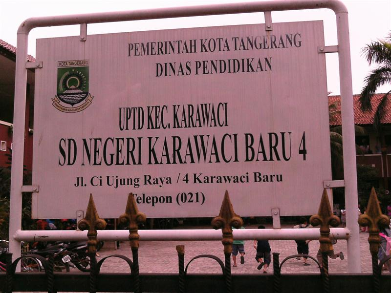
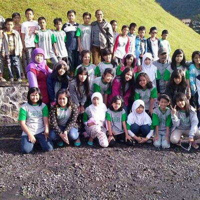
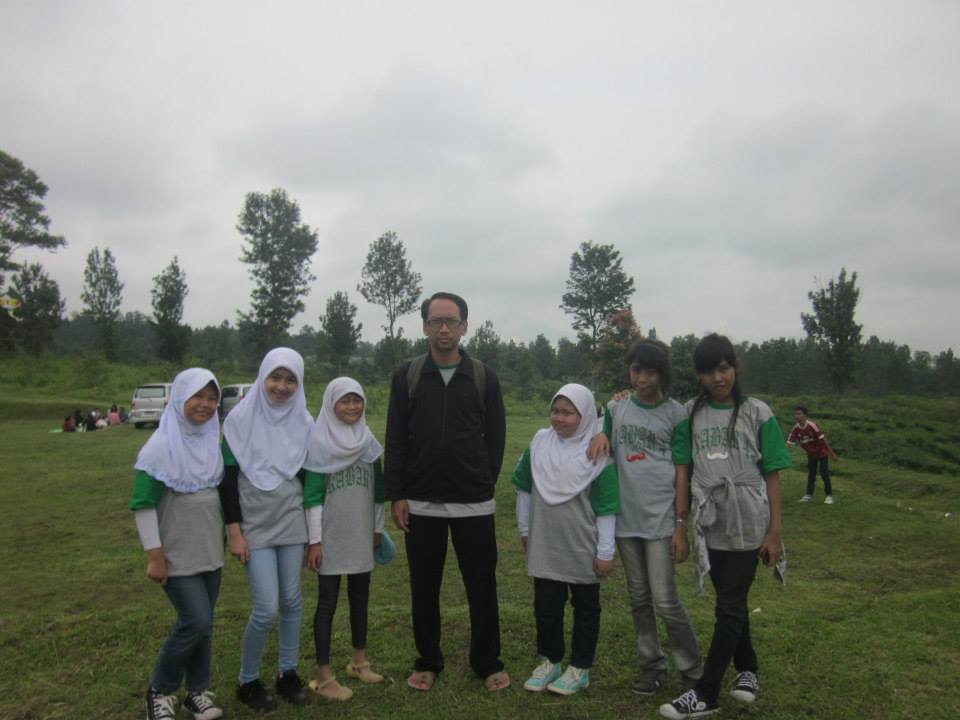

Sekolah Dasar
Saya mulai masuk sekolah Dasar pada tahun 2007, di SDN Karawaci Baru 4. Lokasi SDN Karawaci Baru 4 berada di Jl. Ciujung Raya No.4, RT.009/RW.002, 9, Karawaci Baru, Kec. Karawaci, Kota Tangerang. Wali kelas pertama saya pada saat kelas 1-2 adalah Bu siti Zulaikah. wali kelas pada saat kelas 3-4 adalah Bu Eli Latifah, wali kelas pada saat kelas 5 adalah Bu Iyam Mariyam, dan wali kelas pada saat kelas 6 adalah Pak Wawan Hermawan. ketika saya SD, saya aktif mengikuti kegiatan dan beberapa lomba, seperti aktif dalam ekstrakulikuler pramuka dan ekstrakulikuler melukis. Dalam bidang akademik, alhamdulliah saya juga pernah mewakili sekolah saya untuk lomba OSN Matenatika tingkat Kota. Berikut adalah beberapa foto saya waktu SD.
Ini adalah foto pada saat perpisahan SD di villa bogor.
Ini adalah teman dekat saya waktu SD dan guru komputer saya yang berana pak Arif Firdaus.